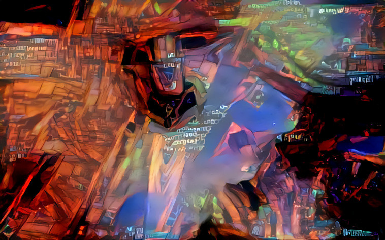
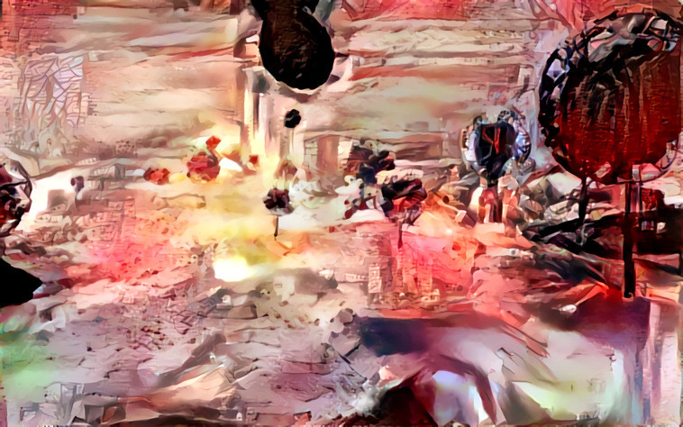
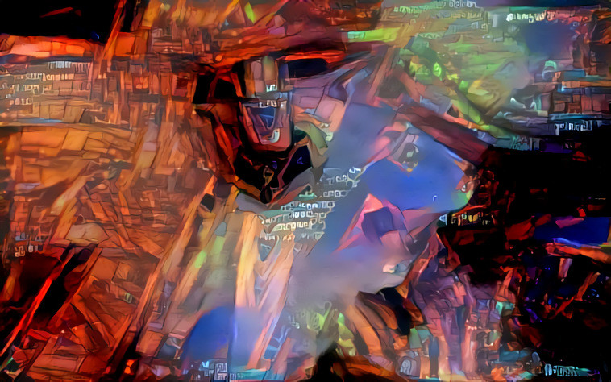
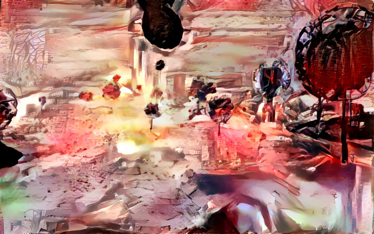
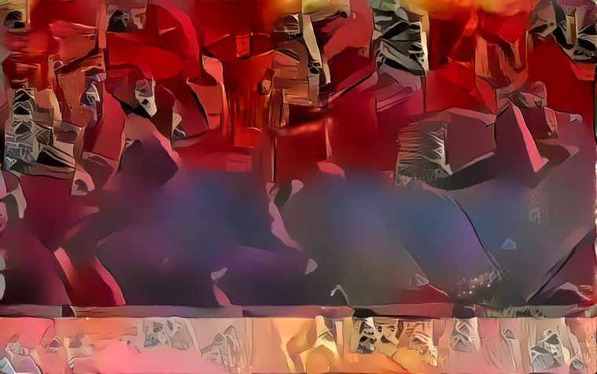
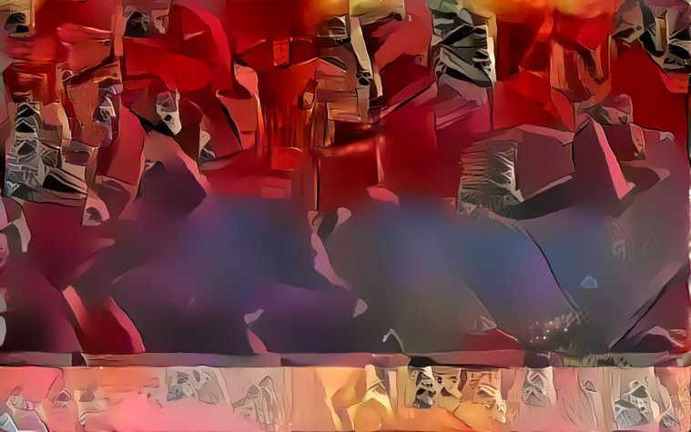

To create these prints, I first made a series of screenshots in various games, as if it they were landscapes I took pictures of. Then I converted the images to either TIFF or BMP and manipulated the image file using Audacity, an open source audio editing program. I added various audio effects to the files and exported them to images again to find out what had happened. After a while you learn what effect certain filters have on the image files, so you can make a semi-educated guess at what the outcome will be, but you won’t really know until you try. The process of discovering feels exciting and magical.
Some of these screenshots and processed images I then manipulated further using Deep Dream Generator. You may have heard of this when it became an internet hype to upload pictures and for the artificial neural net project to display what it saw: that same image but with eyes and animals in every wrinkle of the image. This same neural net can also be used to generate images in the style of a different image using the Deep Style function.
 





 
